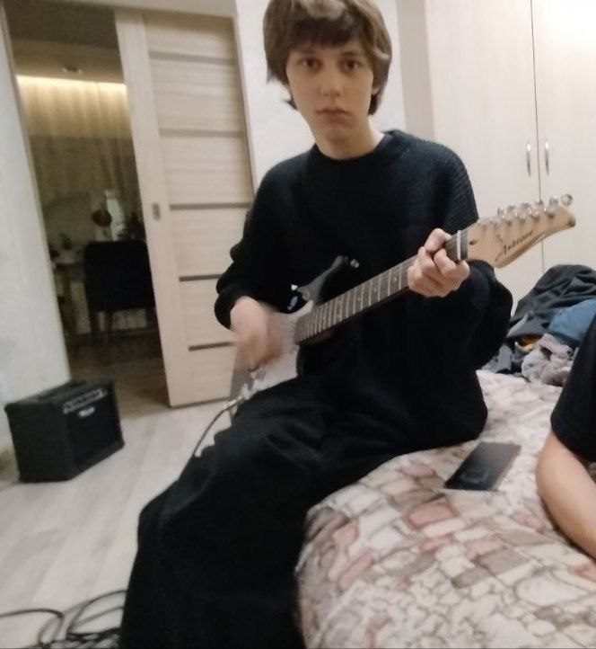

Карикатурное Искусство - Музыкальная группа, играющая в своем стиле, похожем на группу Конец Солнечных Дней. Музыкальный коллектив зародился в марте 2024 года, а в составе были всего два участника, одним из которых был Кирилл (нынешний барабанщик). Стиль группы изначально отличался кардинально и был, скорее, рок-н-роллом. Позже (в ноябре 2024) к группе присоединился Александр (нынешний автор песен и вокалист). Он пришел на роль ритм гитариста.
Но в начале января 2025 года из группы ушел участник, который был вокалистом и автором песен, что очень сильно потрясло двух оставшихся участников группы (Кирилла и Александра). После этого коллектив поменял вектор направления своего творчества. В конце января в группу пришел Толик (гитарист). В феврале 2025 года вышел их первый сингл "Маленький рай".
Всех приветствую, меня зовут Кирилл. В группе Карикатурное Искусство я являюсь барабанщиком, свожу и помогаю записывать песни, работаю над всеми полноценными роликами, которые выходят на нашем YouTube канале и помогаю в написании наших песен. Также являюсь одним из основателей этого коллектива, в котором я изначально был лишь басистом. Родился и вырос в городе Шахты, а Саня (наш гитарист и вокалист) приходится мне братом:)
Всем привет! Меня зовут Саня. Я являюсь вокалистом, гитаристом и основным автором песен в группе Карикатурное Искусство! В группу меня позвал Кирилл (наш барабанщик), но тогда я был лишь гитаристом. После ухода вокалиста, я стал основным автором песен и голосом нашей группы. Родился и вырос в городе Шахты.
Здравствуйте дорогие друзья! Меня зовут Толик, мне 17 лет, играю в группе "Карикатурное искусство" относительно недолго. Учусь на системного администратора, 2-й курс, моя роль в группе: гитарист. помимо гитары увлекаюсь компьютерными играми. иногда помогаю придумать текст к песенкам, который будут вас радовать в дальнейшем, в группу меня пригласил не так давно мой очень хороший друг Кирилл (барабанщик), с ним я знаком больше года, в группе я поближе познакомился с Саньком (гитарист, вокалист). проживаю я в поселке "Артем" города "Шахты" всем мира и добра.